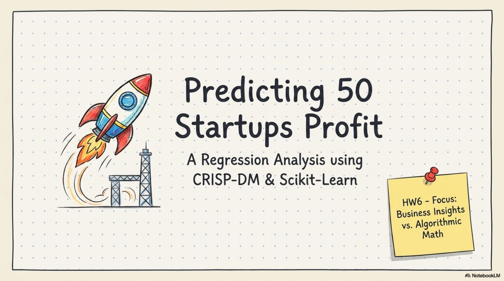
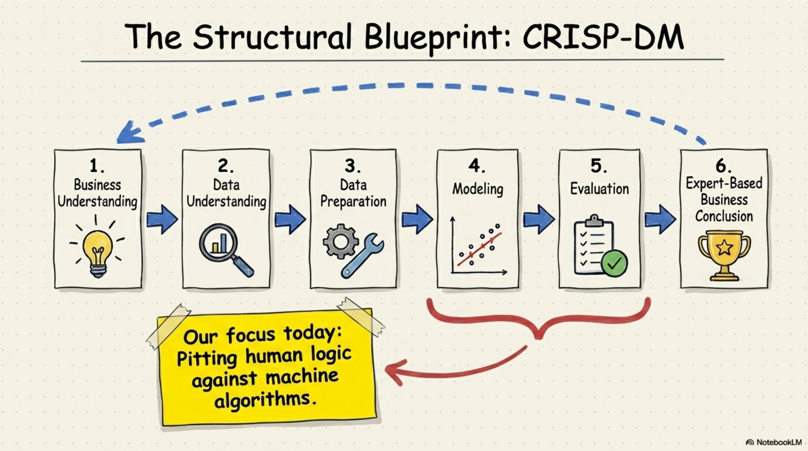
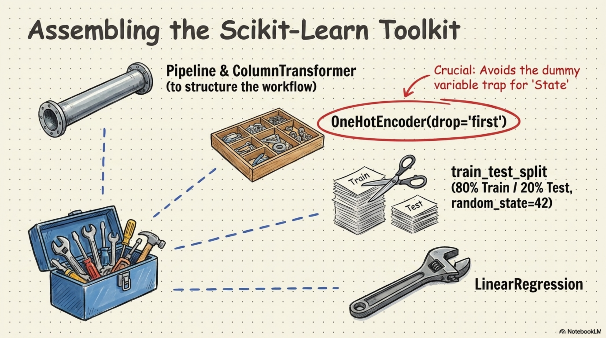
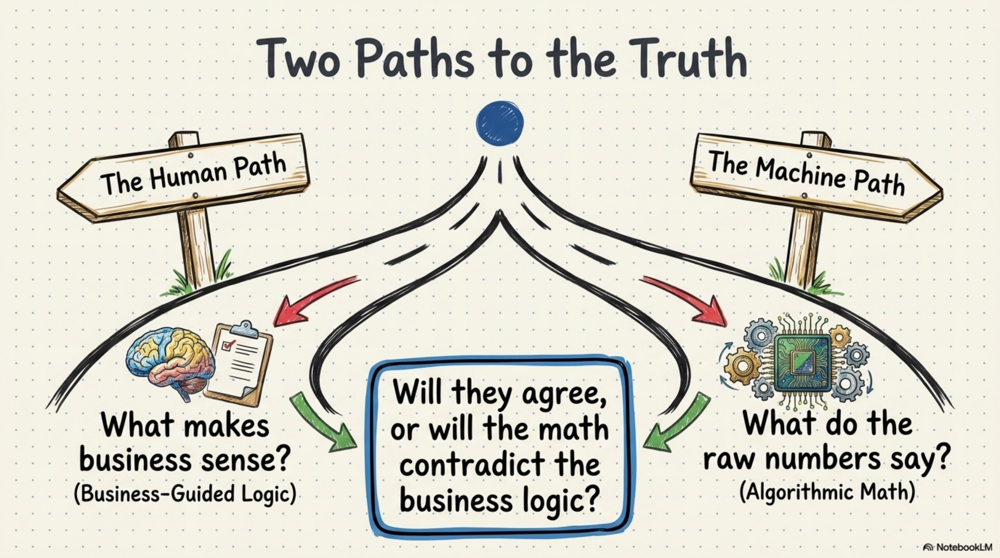
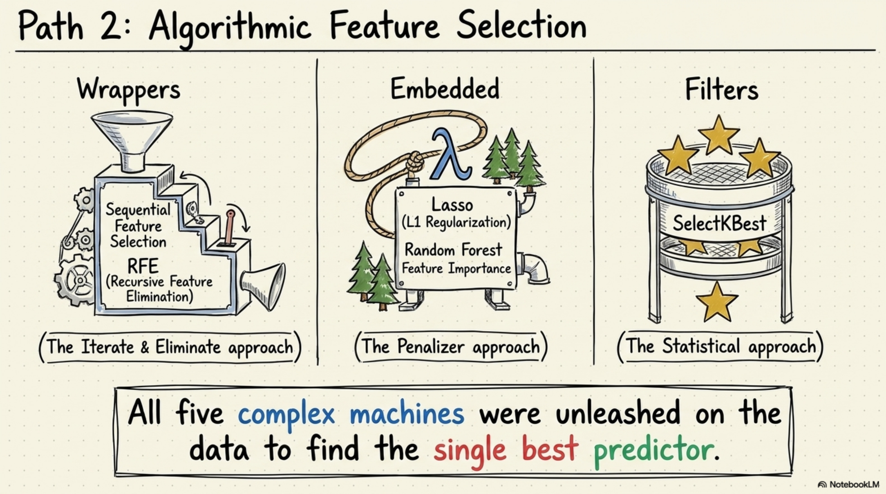
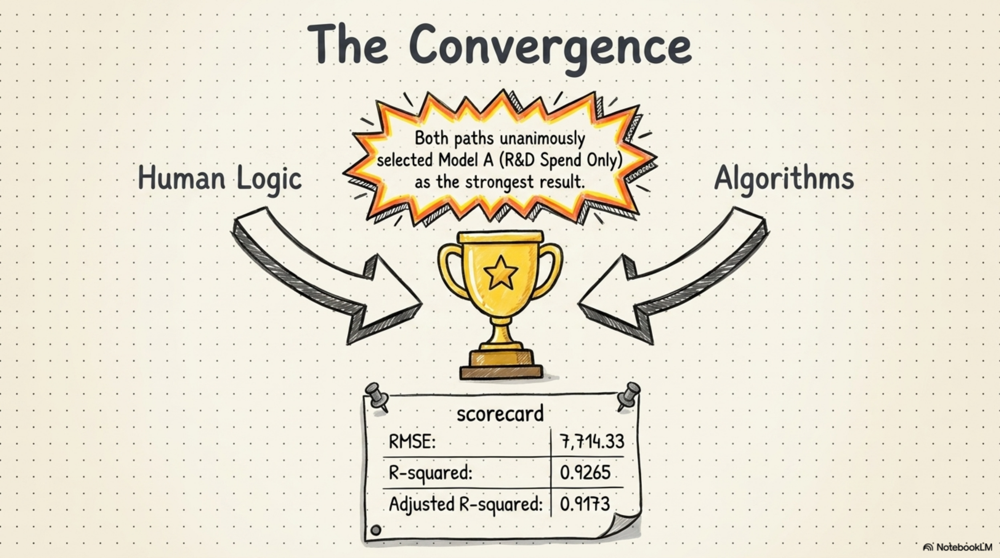
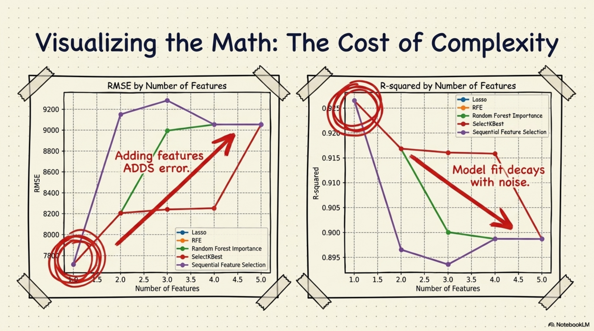
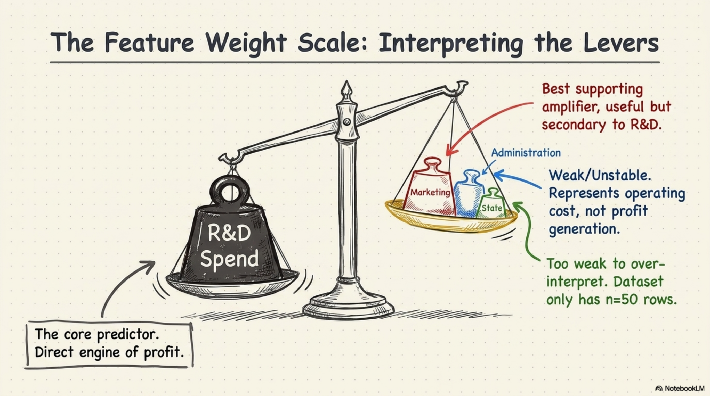
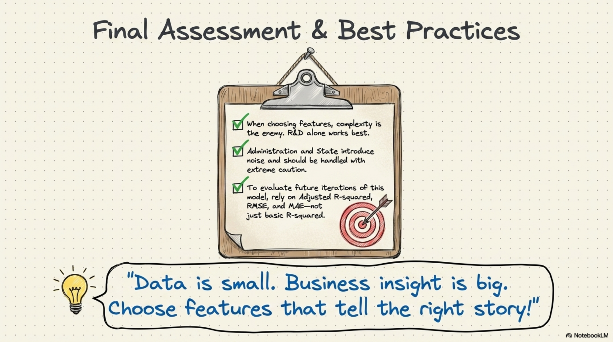

Decoding Startup Profit
01 / 11
Decoding Startup Profit
02 / 11

Decoding Startup Profit
03 / 11

Decoding Startup Profit
04 / 11

Decoding Startup Profit
05 / 11

Decoding Startup Profit
06 / 11

Decoding Startup Profit
07 / 11

Decoding Startup Profit
08 / 11

Decoding Startup Profit
09 / 11

Decoding Startup Profit
10 / 11

Decoding Startup Profit
11 / 11

用 CRISP-DM 與 Scikit-Learn，預測五十家新創公司的獲利。
商業目標：找出真正推動 Profit 的投資槓桿。
CRISP-DM 把問題、資料、模型與評估連成一條完整流程。
工具箱重點：Pipeline、ColumnTransformer、One-Hot Encoding、LinearRegression。
分析分成兩條路：人類商業邏輯，以及機器特徵選擇。
人類路徑設計五組實驗，逐步檢查每個特徵是否真的有價值。
機器路徑用 Wrapper、Embedded、Filter 三類方法尋找最佳特徵。
兩條路徑收斂：R&D Spend 是最穩定、最強的單一預測因子。
更多特徵不一定更好，複雜度可能帶來誤差與雜訊。
特徵權重顯示：R&D 是核心，Marketing 是輔助，Administration 與 State 要保守解讀。
最後原則：資料很小，商業洞察很大。選擇能說對故事的特徵。